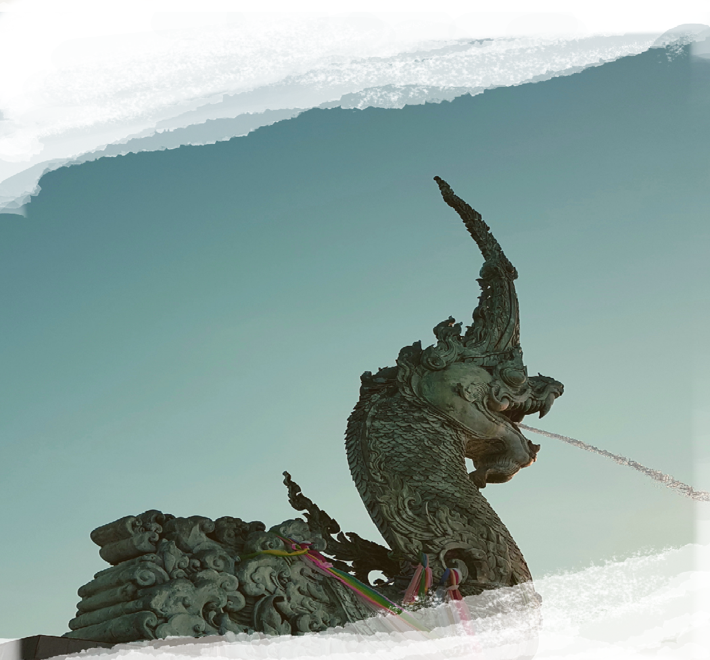
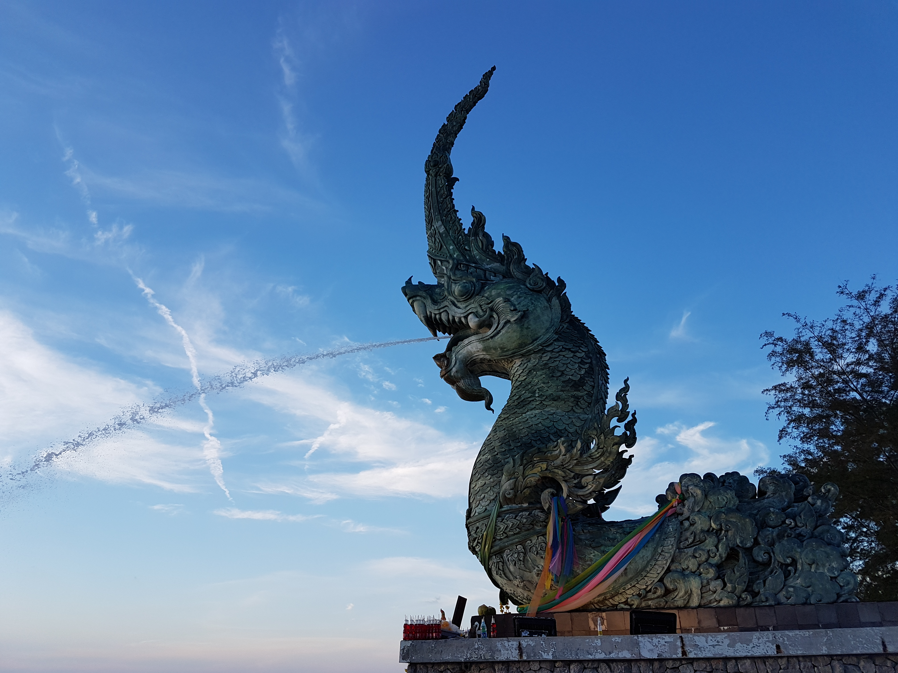

Contact
About
Gallery
Home
ABOUT
Gallery
Home
Contact
ประติมากรรมพญานาคพ่นน้ำ

ประติมากรรมพญานาคพ่นน้ำ
ประติมากรรมพญานาคพ่นน้ำ ถือเป็นสัญลักษณ์หนึ่งของจังหวัดสงขลา เป็นโครงการที่เทศบาลนครสงขลา สรรค์สร้างขึ้นเพื่อ ปรับปรุงภูมิทัศน์บริเวณ ชายหาดสมิหลาให้เป็นสถานที่พักผ่อนของ นักท่องเที่ยวและชาวสงขลา โดยนำเอา คติความเชื่อเกี่ยวกับ พญานาคที่เชื่อว่า “พญานาค” เป็นสัญลักษณ์ของการ กำเนิดน้ำและความอุดมสมบูรณ์ ชาวใต้จึงนับถือพญานาคเป็น สิ่งศักดิ์สิทธิ์ และกราบไหว้ขอพร เพื่อเป็นสิริมงคลแก่ชีวิต นับ เป็นแหล่งการเรียนรู้ทาง วัฒนธรรมแห่งใหม่ที่เกิดขึ้นของ ชาวสงขลา ประติมากรรมพญานาคพ่นน้ำ เป็นสัญลักษณ์หนึ่งของ จังหวัดสงขลา มีลักษณะแบบลอยตัว สามารถมองเห็นได้รอบด้านเนื้อ วัตถุเป็นโลหะทองเหลืองรมสนิมเขียว ออกแบบ โดย อาจารย์มนตรี สังข์มุสิกานนท์ (รองอธิการบดีมหาวิทยาลัยทักษิณคนปัจจุบัน) มีการสร้างขึ้นเป็น 3 ส่วน คือ ส่วนที่หนึ่ง หัวพญานาค ตั้งอยู่บริเวณสวนสองทะเล ปลายแหลมสนอ่อน มีขนาดเส้นผ่าศูนย์กลาง ของลำตัว 1.20 เมตร ความสูงจากฐานลำตัวจนถึงปลายยอดสุด ประมาณ 9 เมตร พ่นน้ำลงสู่ปากอ่าวทะเลสาบสงขลา ส่วนที่สอง สะดือพญานาค ตั้งอยู่บริเวณลานชมดาว สนามสระบัว แหลมสมิหลา ขนาดเส้นผ่าศูนย์กลางของลำตัว 1.20 เมตร ความยาว 5.00 เมตร ความสูง 2.50 เมตร ลักษณะลำตัวโค้งครึ่งวงกลม เพื่อให้นักท่องเที่ยวได้ลอด ใต้สะดือพญานาคให้เกิดความเป็นสิริมงคล แก่ตนเอง ส่วนที่สาม หางพญานาค ตั้งอยู่บริเวณชายหาดสมิหลา ริมถนนสะเดา (หลังสนามกอล์ฟ) ขนาดเส้นผ่าศูนย์กลาง 1.20 เมตร ความยาว 4.00 เมตร ความสูง 4.50 เมตร ปัจจุบันประติมากรรมพญานาคพ่นน้ำได้รับความนิยมจากนักท่องเที่ยวทั้งชาวไทย และชาวต่างประเทศที่เข้ามาเยี่ยมเยือน จังหวัดสงขลา
